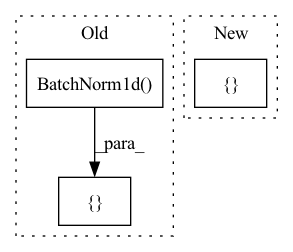

Pattern ID :1899

Before Change
else:
shortcut = [spectral_norm(nn.Linear(input_size, output_size)) if spect_norm else
nn.Linear(input_size, output_size)]
shortcut += batch_norm * [nn.BatchNorm1d(output_size)]
block = [spectral_norm(nn.Linear(input_size, output_size)) if spect_norm else
nn.Linear(input_size, output_size)]
After Change
block = [spectral_norm(nn.Linear(input_size, output_size)) if spect_norm else
nn.Linear(input_size, output_size)]
if norm:
block += [norm(output_size)]
block += [activation]
block += [spectral_norm(nn.Linear(output_size, output_size)) if spect_norm else
In pattern: SUPERPATTERN
Frequency: 3
Non-data size: 3
Instances
Fragment ID: 3464540
Project Name: lliutianc/gan-flow
Commit Name: 557b24a34e52ec01ad8d8e2c2b4a130f22762327
Time: 2020-06-01
Author: lliuitanc@gmail.com
File Name: residualblock.py
Class Name: ResidualBlock
Method Name: __init__
Parent Class: nn.Module
Fragment ID: 3464549
Project Name: ubcdingxin/improved_ccgan
Commit Name: f0f720e3f97c0d41a8ade33311fd8efe3f6b38c9
Time: 2020-03-01
Author: dingx92@gmail.com
File Name: CellCounting/models/cond_cnn_generator_discriminator.py
Class Name: cond_cnn_discriminator
Method Name: __init__
Parent Class: nn.Module
Fragment ID: 3464543
Project Name: jdb78/pytorch-forecasting
Commit Name: 5182d5d5fc2fb767a885766c665bdc540145a6af
Time: 2020-07-15
Author: beitner.jan@bcg.com
File Name: pytorch_forecasting/models/nbeats/sub_modules.py
Class Name: NBEATSBlock
Method Name: __init__
Parent Class: nn.Module